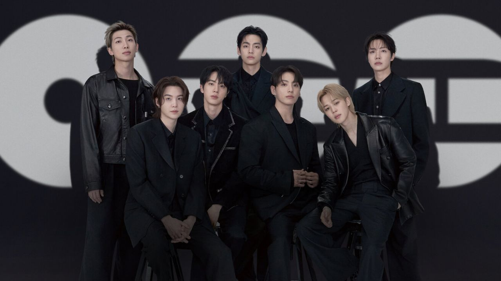

BTS
BTS, também conhecido como Bangtan Boys, é um grupo masculino sul-coreano formado em 2010.O grupo consiste em sete integrantes: Jin, Suga, J-Hope,
RM, Jimin, V e Jungkook, os quais coescrevem e coproduzem grande parte do seu material.Originalmente um grupo de hip hop, eles expandiram seu
estilo musical para incorporar uma ampla gama de gêneros, enquanto suas letras abordavam temas como saúde mental, os problemas da juventude escolar
e a chegada da fase adulta, perdas, a jornada rumo ao amor-próprio, individualismo e as consequências da fama e do reconhecimento. Sua discografia
e obras adjacentes também fazem referência à literatura, filosofia e psicologia, e incluem uma narrativa em universo alternativo.
O grupo estreou em 2013 sob a Big Hit Entertainment com o single-álbum 2 Cool 4 Skool.[1] No ano seguinte, BTS lançou seus primeiros álbuns de estúdio em
coreano e japonês, Dark & Wild e Wake Up respectivamente. O segundo álbum em coreano do grupo, Wings (2016), foi o seu primeiro a vender um milhão de
cópias na Coreia do Sul.[2] Ao longo de 2017, BTS já havia ingressado no mercado musical global e liderado a onda coreana aos Estados Unidos, tornando-se o
primeiro grupo sul-coreano a receber um certificado de ouro da Recording Industry Association of America (RIAA) com a canção "Mic Drop", bem como o primeiro
ato sul-coreano a liderar a Billboard 200, com seu álbum Love Yourself: Tear (2018).Em 2020, BTS tornou-se o grupo mais rápido desde The Beatles a
conquistar o topo da tabela de álbuns estadunidense quatro vezes em menos de dois anos, com Love Yourself: Answer (2018) tornando-se o primeiro álbum
coreano a receber o certificado de platina da RIAA; no mesmo ano, eles também configuraram-se como o primeiro ato sul-coreano a alcançar o topo dos gráficos
Billboard Hot 100 e Billboard Global 200 com sua canção indicada ao Grammy Awards, "Dynamite". Seus lançamentos seguintes "Savage Love", "Life Goes On",
"Butter", "Permission to Dance" e "My Universe" fizeram do grupo o ato mais rápido a liderar a tabela de singles dos Estados Unidos seis vezes desde The
Beatles em 1966.
O nome BTS (Bangtan Boys), significa "garotos a prova de balas" que representa a ideia de bloquear críticas, expectativas e estereótipos derecionados aos
jovens como se fossem tiros. E o fandom do grupo se chama ARMY (Adorable Representative M.C. for Youth), o nome simboliza um exército que protege e caminha
ao lado do grupo.
